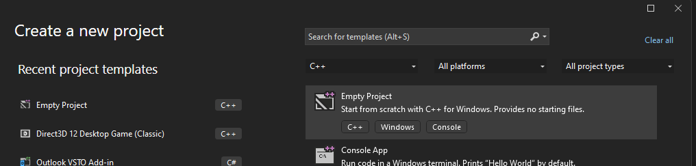

Zero2Heros : Agent
La toute première étape pour ce cours est de créer un projet vide sous Visual Studio.
Ouvrez Microsoft Visual Studio et Créer un nouveau projet.
Choisissez un projet vide C++.

Puis dans le Solution Explorer, cliquez droit sur la solution et ajouter un nouveau fichier, que l'on
appelera main.cpp
Dans le fichier, ajouter ce code, pour afficher un texte "Hello World!".
#include <iostream>
int main()
{
std::cout << "Hello World!" << std::endl;
system( "pause" );
return 0;
}
Création de l'agent
Passons maintenant à la création d'un Agent. Cette classe représente l'agent intelligent, qui va réagir aux actions du monde et du joueur.
Un agent intelligent (AI) est une entité autonome capable de percevoir son environnement grâce à des capteurs et aussi d'agir sur celui-ci via des effecteurs afin de réaliser des objectifs.
(source: wikipedia)
Ajouter une classe Agent. On ajoute quelques lignes de code pour pouvoir intéragir avec l'agent.
Une fonction d'initialisation, une update et un arret (je suis les conventions de nommage de chez Insomniac
Games pour info,
vous pouvez les
trouver ici)
Les fonctions d'init et d'arret ne feront rien pour le moment, et l'update nous servira juste pour afficher
du debug.
Le code actuel dans la classe Agent:
#pragma once
class Agent
{
public:
Agent();
~Agent();
void Init();
void Update( const float _dt );
void Shutdown();
};
#include "stdafx.h"
#include "Agent.h"
Agent::Agent() = default;
Agent::~Agent() = default;
void Agent::Init()
{
}
void Agent::Update( const float _dt )
{
std::cout << "Je parle (" << _dt << ")" << std::endl;
}
void Agent::Shutdown()
{
}
Dans le main, on appelle juste une fois l'update:
#include "stdafx.h"
#include "AI\Agent\Agent.h"
int main()
{
Agent a;
a.Update( 0.033f );
system( "pause" );
return 0;
}
Et le résultat:

Donc tout marche, on a les bases.
Prochaine étape
Maintenant, on va ajouter une state machine. C'est un systeme assez basique qui permet de changer d'etat (les
states), d'en rajouter, d'en enlever et le tout de facon generique.
Sa principale qualité de mon point de vue est de cadrer les appels d'initialisation, d'arret des
differents etats, donc de pouvoir nettoyer la memoire correctement, preparer les variables, etc. donc d'organiser son code.